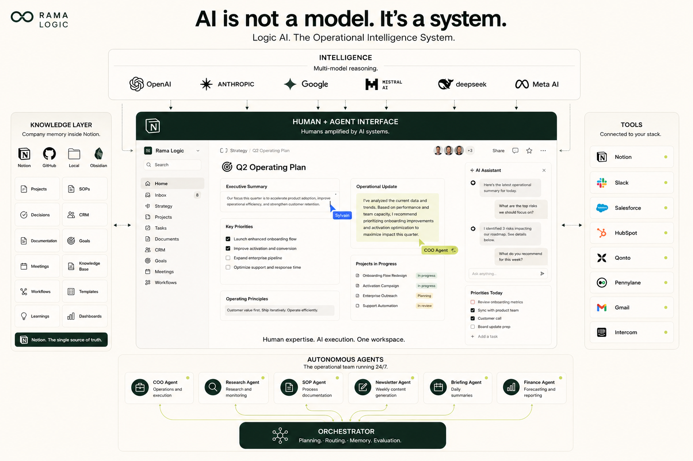

Pourquoi l'IA la plus utile n'est pas la plus intelligente.
Comment je dirige mon entreprise avec Claude et Notion. Seul. Sans équipe. Sans no-code.
Notion Solution Partner
Chaque mois, un nouveau modèle « le plus intelligent du monde ».
Et pourtant, quand vous l'ouvrez, il ne sait rien de votre entreprise.
Vous avez embauché un génie. Mais un génie amnésique : tous les matins, il a tout oublié.
Utilité = Intelligence × Mémoire
Si la mémoire est à zéro, l'utilité est à zéro. Peu importe l'intelligence.
Un modèle moyen qui connaît toute votre entreprise battra toujours un génie qui repart de zéro. La vraie course n'est pas au QI. Elle est à la mémoire.
Pas une démo de labo. Mon entreprise réelle.
(moi)
en production
qui tournent seuls
zéro no-code
Deux briques seulement : Notion comme mémoire, Claude comme orchestrateur. Tout le reste s'y branche.
L'IA n'est pas un modèle. C'est un système.

Ne faites pas confiance à votre cerveau.
Faites confiance à Notion.
Le cerveau le plus puissant de mon entreprise n'est pas le mien.
Un seul cerveau : 32 databases Notion.
Tout ce que mon entreprise sait est là. Pas dans ma tête, pas dans 14 outils.
32 databases, c'est trop. Pour un humain comme pour une IA.
La pièce maîtresse n'est pas une database. C'est une page d'index : la carte que l'agent lit en premier, à chaque session.
C'est le document d'onboarding d'un nouvel employé. Sauf que cet employé le lit en 3 secondes, à chaque fois qu'il commence sa journée.
L'agent ne fait pas que lire la mémoire. Il l'écrit.
Un logiciel s'use avec le temps. Ce système fait l'inverse : il s'apprécie.
Personne n'a écrit ce message. Je dormais encore.
Ce message que vous venez de voir ? Voici qui l'a écrit.
Un agent lit le CRM, la banque, l'agenda et les objectifs du trimestre. Puis il croise tout ça et me dit : voilà où tu en es, voilà ta priorité du jour.
Je fais un call client. Fathom transcrit. Un agent passe derrière et range : compte rendu lié au bon contact et à la bonne opportunité, synthèse en 3 lignes, prochaine action datée dans ma to-do.
Je n'ai pas touché mon CRM à la main depuis des mois.
Il n'a jamais été aussi propre.
13:00
Chaque vendredi, un agent croise la banque, Stripe et la facturation, puis publie mon dashboard CFO.
Les vrais chiffres sont dans le dashboard. Pas sur un écran géant à Vivatech.
L'agent relit ses journées et réécrit ses propres instructions.
1. Toujours vérifier les doublons CRM avant création
2. Résumer les calls de plus de 45 min en 5 lignes au lieu de 3
3. Ajouter le solde Qonto au brief du lundi
Mon système d'hier est moins bon que celui d'aujourd'hui.
Et je n'ai pas écrit une ligne de code. J'ai répondu à un message Telegram. C'est ça, une mémoire qui compose : chaque jour de travail améliore l'outil qui travaille.
Les modèles sont des commodités. Votre contexte est votre actif.
Demain, un meilleur modèle sort. Je change une ligne. Le système, lui, ne bouge pas.
18 mois de mémoire structurée.
Chaque call, chaque décision, chaque client, chaque erreur documentée. Personne ne peut vous le racheter, et aucun concurrent ne peut le copier.
Trois étapes. Lundi matin.
Un seul endroit structuré pour tout ce que votre boîte sait. Notion ou autre, peu importe : un seul cerveau.
Écrivez la page d'index que vous donneriez à un nouvel employé : où est quoi, et les règles de la maison.
Donnez à l'agent le droit d'écrire dans la mémoire, pas seulement de la lire. C'est là que ça compose.
L'erreur classique : commencer par l'agent.
Commencez par la mémoire.
La course à l'intelligence, c'est leur problème.
La course à la mémoire, c'est le vôtre.
Utilité = Intelligence × Mémoire · Elle commence lundi.
Notion & IA & Automatisation · Méthode LOGIC
Ex-Ledger, Swile, Edenred · Paris
linkedin.com/in/sylvainramaradjou